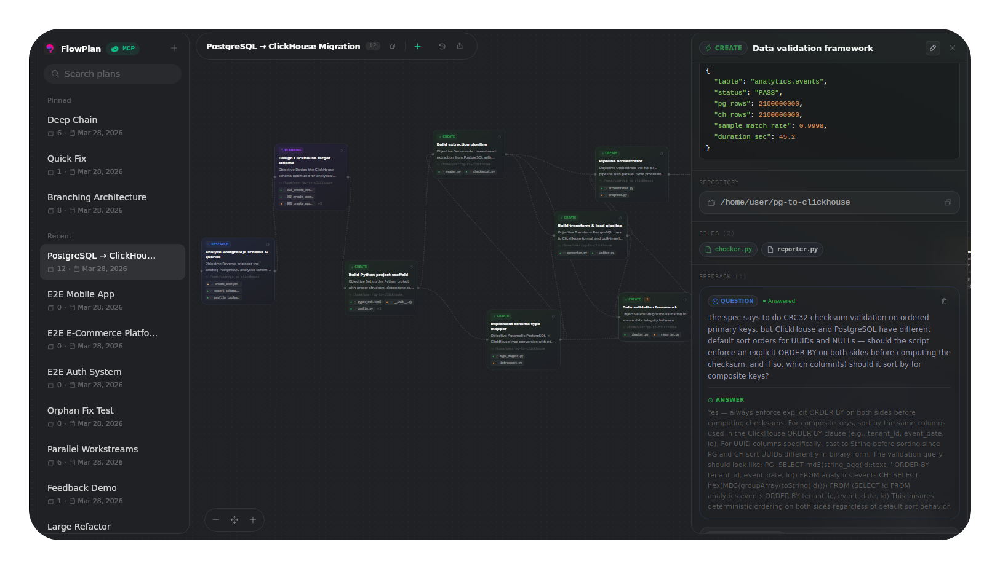
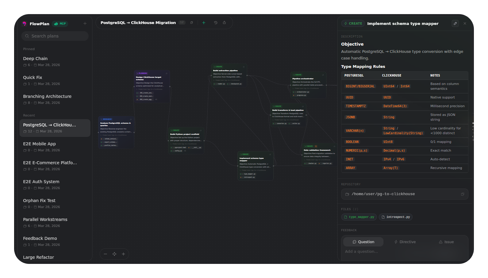
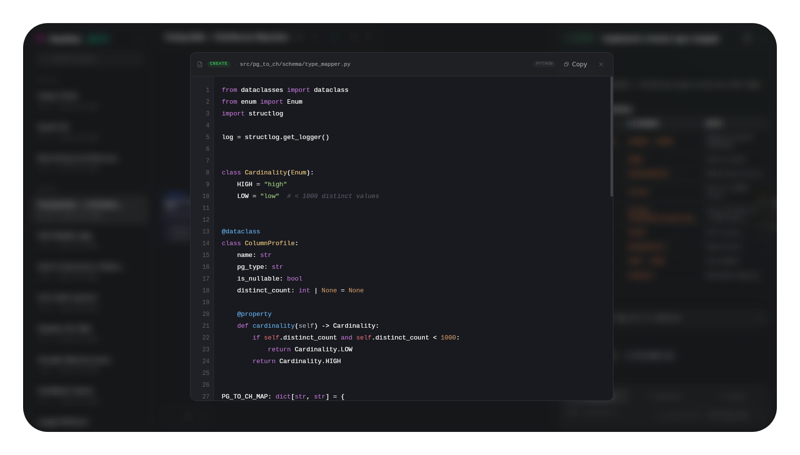

See your agent's plan before it executes. Catch mistakes early, manage context efficiently, and ship with confidence. Visual plans are easier to read and debug than walls of text.

FlowPlan gives you visibility and control over what your AI coding agents plan to do, before they do it.
Cards automatically lay out as a dependency graph. Drag to reposition, zoom, pan. Connect cards by dragging between handles.
Each card lists affected files with proposed code changes. Click any file to open a full code viewer with syntax highlighting.
Ask questions, give directives, or report issues directly on cards. The agent reads and responds through the same MCP connection.
Every change is recorded. Scrub through history to see what was added, modified, or removed. Visual diff highlights on the canvas.
Research, Planning, Create, Edit, Test. Color-coded and tagged so you can see the shape of work at a glance.
Export plans as SVG for documentation or JSON for backup. Import JSON plans to restore or share between machines.


AI agents dump execution plans as plain text in your terminal. FlowPlan turns that into something you can actually read, review, and fix.
Review every proposed file change, dependency, and step before the agent touches your codebase. Spot wrong approaches, missing files, or broken dependencies at a glance.
Instead of letting the agent burn tokens executing a flawed plan, review it visually first. Give directives to fix the approach — saving time, tokens, and frustration.
A flow diagram with color-coded cards, dependency arrows, and file lists is instantly scannable. Text plans buried in a terminal scroll are not. You can debug what you can see.
Leave directives on specific cards to correct the agent's approach. Ask questions about unclear steps. Report issues before they become bugs in your code.
FlowPlan runs as a local desktop app with a built-in MCP server. Your AI agent connects and pushes plans in real-time.
Download the latest desktop release and launch the app. The MCP server boots automatically on port 3100, ready to accept connections.
Add FlowPlan as an MCP server in your agent's config. Works with any client that supports Streamable HTTP transport.
Tell your agent to create a plan. It calls FlowPlan's MCP tools to populate cards, files, and dependencies. You see it all live.
From solo developers to engineering teams, FlowPlan adds structure and visibility to AI-assisted coding.
Break down complex features into planning, implementation, and testing cards. Preview every file change before the agent writes a single line.
create planningVisualize refactoring steps as a dependency graph. Ensure the agent tackles files in the right order and nothing falls through the cracks.
edit testPlan database migrations, framework upgrades, or API version bumps step by step. See every affected file and dependency before executing.
planning editBefore submitting, have the agent lay out all changes in a FlowPlan. Review the proposed diff card by card, leave directives for adjustments.
planning editPlan bug fixes with clear steps: identify affected files, outline the fix, and add test cards for verification. All before touching the code.
edit testNew team members can read exported plans to understand how features were built. The history timeline shows the evolution of decisions.
planning createFlowPlan supports manual card editing, but we recommend making changes through your AI agent instead. The agent retains full context of the plan, dependencies, and file changes — resulting in more consistent updates and better context management across your entire workflow.
FlowPlan is a two-way bridge between you and your AI agent. Here's how the communication works in practice.
Every plan and card has a "Copy ref" button. Click it to copy a structured reference to your clipboard, then paste it directly into your agent's chat. The agent parses the plan and card IDs to target the exact card.
[FlowPlan] "Auth Refactor" (plan-123) > "Add JWT middleware" (card-456)
"Update this card: [FlowPlan] ... (card-456) — add error handling for expired tokens."
Right-click any card to add feedback. Three types, each with a different agent response:
answer_feedback — answer appears inline under the question.
acknowledge_feedback.
After leaving feedback on cards, tell the agent to pick it up. The agent calls get_all_feedback, processes each item, and responds or updates the plan accordingly.
"Check FlowPlan for any pending feedback. Answer the questions and follow the directives."
Plans evolve. Tell the agent to read the current board and make changes. It calls get_cards to see the current state, then update_card or add_cards to modify. Every change is tracked in the history timeline.
"Look at the current FlowPlan board. Update card X to include the new middleware file, and add a testing step that depends on it."
FlowPlan exposes a complete set of MCP tools over Streamable HTTP. Any compatible agent can drive the board programmatically.
FlowPlan is a desktop app built with Tauri. Download the latest Ubuntu or macOS release, launch it, and connect your agent.
Latest release: v1.2.0. Download links are resolved from the updater feed and mapped to direct GitHub installer assets.
Stop guessing. Start visualizing. Catch errors before execution, save tokens, and ship with confidence.